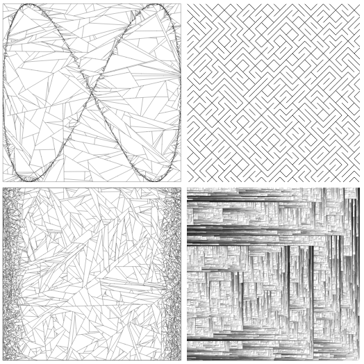

Albin Calais
Passionné de maths et d'informatique
Je suis étudiant à l'école d'ingénieur Polytech à Tours, actuellement en 4ème année de ma formation en informatique.
Je me passionne pour la manière dont les choses fonctionnent (en théorie), la création de systèmes complexes à partir du moins possible et les rendus graphiques même si je n'ai pas de formation artistique. J'aime tout concevoir et comprendre moi-même.
Vous pouvez explorer certains de mes projets / centres d'intérêts dans ce graphe, déplacez-vous avec la souris ou en glissant sur mobile.
Ce site est volontairement zoomé, pour le plaisir de l'exploration.
Liens
Me contacter: albincalais@gmail.com
Github: Akahara
LinkedIn: Albin Calais
CV: Albin Calais.pdf
AHK
AHK est un langage que j'ai créé de toutes pièces. Il est très inspiré de Java et C pour la syntaxe de base mais ne possède pas d'orienté objet.
AHK est mon projet le plus long pour l'instant. D'abord il a fallu concevoir la spécification du langage (syntaxe, opérateurs, fonctions, capacités...) qui permet de définir l'ensemble des codes sources valides et leurs effets. Ensuite il reste à créer le compilateur associé, qui prend un code source en entrée et qui renvoie un exécutable.
J'ai commencé à développer AHK en 2018, j'ai réécris plusieurs fois le compilateur depuis, aujourd'hui le langage est parfaitement utilisable (nonobstant les bugs que je n'ai pas encore trouvé).
Pour l'instant il contient les types primitifs de base, les tableaux, fonctions, structures, types génériques, alias, l'importation d'autre fichiers et la portée des variables, l'allocation dynamique de mémoire avec un garbage collector, l'IO vers des fichiers, les compositions et opérations de fonctions et sans doute plus que j'ai oublié.
Hello, World! en AHK :
Le pipeline pour passer du code source à l'assembleur est relativement simple :
- Code source (texte)
-
- Tokenizer
- Suite de tokens
-
- Unit parser
-
- Statement parser
-
- Expression parser
- AST (abstract syntax tree)
-
- Linker
- AST lié
Après avoir lié l'AST on peut optimiser et convertir très facilement le code dans n'importe quel format, j'ai choisi l'assembleur :
- AST lié
-
- Unit Writer
-
- Expression Writer
-
- ...
- langage assembleur
Et une fois que l'assembleur est généré je le compile en exécutable avec nasm et ld :
- langage assembleur
-
- nasm
-
- ld
- exécutable
Structures en AHK :
Pour l'instant je ne génère que des exécutables 64 bits compatibles linux. MacOS devrait être simple à adapter mais je ne compte pas chercher à compiler pour windows.
Une autre solution que j'étudie est de transformer l'AST lié en AST compatible avec llvm.
Alphabet fonctionnel
Un de mes passe-temps est de trouver des fonctions mathématiques qui dessinent des formes, un jour je suis tombé sur une police d'écriture très étrange et j'ai eu l'idée de chercher 26 fonctions qui dessinent les 26 lettres de l'alphabet.
J'apprécie énormément ce genre d'exercice car c'est très loin de ce que l'on aprend pendant nos études et pourtant c'est un des savoir les plus utile en math - trouver des fonctions qui répondent à un certain nombre de critères.
Puisque les lettres sont en 2D j'ai beaucoup utilisé les nombres complexes pour créer les graphes des fonctions. Ça n'a rien de très compliqué une fois qu'on sait ce que l'on fait mais retrouver quelle fonction correspond à quelle lettre l'est beaucoup plus.
Esolangs
J'ai conçu plusieurs langages, d'abord AHK puis plusieurs Esolangs. Les Esolangs sont des langages ésotériques dont l'objectif est rarement d'être très productif, mais plutôt de prouver qu'il est possible de programmer avec un peu tout et n'importe quoi.
J'ai expérimenté quelques idées, notamment avec le langage bt qui est basé sur une pile et dont les valeurs peuvent être seulement 0 ou 1 et la seule "vraie" opération est nand (le non-et logique).
C'est aussi très fun de créer le pire langage possible, ma meilleure tentative est Ypton inspiré de la présentation de Mark Rendle.
Hello, World! en Ypton:
("<Y``c rKcf`X")`System.Kernel.cout.ifopened.writeAndCloseImediatelyAfter`;
Jeux
Bien sûr quand on commence à programmer en étant enfant on a tendance à faire des jeux. Je n'en ai publié aucun mais j'en ai fait un certain nombre et fini quelques-uns tout à fait jouables.
Tricky Towers like
Dans mon école d'ingénieur je fais partie du club de programmation P++. Chaque membre fait partie d'un groupe et d'un projet, un des miens a été de créer un jeu pour la borne d'arcade de l'école, le jeu est une copie de Tricky Towers.
Mon projet de l'année suivante a été de réparer la borne d'arcade, et de créer un launcher pour lancer les jeux.
Topaz
Topaz est un jeu de puzzle sur mobile que j'ai réalisé en une semaine comme un défi pour apprendre react-native. Il est tout à fait jouable mais n'est pas publié parce que je n'ai pas de compte développeur, il le sera peut-être un jour.
Game Jams
Un jeu en 48h, c'est possible. Avec Hitbox Makers j'en ai réalisé deux, c'est un exercice très difficile (surtout quand on ne maîtrise aucun game engine !) mais très formateur, et une super occasion de rencontrer des gens géniaux.
Graphismes
Un de mes passe-temps est de créer des graphismes avec des Shaders. J'ai commencé à m'y intéresser il y a quelques années et j'ai appris à utiliser Processing qui fait le lien entre Java et les graphismes 2D. Je me suis vite lancé dans la création de jeux avec OpenGL, construire un wrapper pour utiliser OpenGL en Java est un exercice très intéressant que j'ai recommencé plusieurs fois.
J'ai à peu près tout essayé, du jeu de la vie au raytracing en passant par les fractales et les shaders. Je ne suis pas un artiste donc pour moi c'est beaucoup plus facile de créer des graphismes avec des maths qu'avec un pinceau. Les jeux que je fais aujourd'hui ne comportent souvent aucune texture.
Quelques-unes de mes réalisations :
Marble Engine
Un projet que j'ai fait avec un pote d'abord pour les cours puis pour le fun.
C'est d'abord un moteur de rendu 3D et un générateur de terrain, codé sous C++ et OpenGL. Il pourrait facilement devenir un moteur de jeu ou un éditeur mais pour nous c'est surtout l'occasion d'apprendre les techniques avancées de rendering et d'optimisation.
Features principales :
- Génération de terrain procédural
- Parsing de fichiers obj
- Génération de lumières dynamiques
- Gestion des shaders
- Réfraction et réflexion
- Deferred Rendering
- VFX Pileline (bloom, vignette, distance fog...)
Jeu de cartes
Un jour j'ai aperçu un jeu de cartes dont les versos étaient des visuels générés avec des Shaders. Plutôt que de faire la même chose j'ai simplement écrit 52 équations qui donnent les nombres de 1 à 10 et les symboles J,Q et K.
Pour les symboles il faut dessiner la fonction sur un graphe pour voir apparaître une lettre.
Je trouve le jeu très élégant mathématiquement mais il est absolument impossible de faire une partie avec. C'est plus une curiosité qu'un vrai jeu de cartes.
Le 8 de trèfles, 4 de carreaux, 3 de piques et dame de cœurs :
Maths
J'utilise souvent les Mathématiques dans mes projets, que ce soit un besoin ou une manière de rendre les choses plus élégantes, j'en profite toujours pour améliorer mon intuition mathématique.
J'utilise régulièrement les vecteurs, matrices et les fonctions de transitions, de manière plus théorique je m'intéresse aux graphes, aux écritures de fonctions étant donné des contraintes et à tout un tas de domaines qui n'ont pas/peu d'utilité concrète.
L'ensemble le plus connu des mathématiques : l'ensemble de Mandelbrot
L'affichage se fait avec des Shaders.
Latex
Latex est la plateforme universelle pour la rédaction de documents mathématiques. Connaitre la syntaxe du langage est bien pratique car on la retrouve très souvent lorsqu'on écrit des maths.
*Fun-fact : * LaTeX est Turing-complet, ce qui signifie que - théoriquement - il est possible de simuler n'importe quel autre langage de programmation dans un générateur de PDF.
Quelques liens utiles
- Wolframalpha - Calculatrice basée sur une IA
- Desmos - Calculatrice graphique
- CodeCogs - Un 'compilateur' LaTeX en ligne
Bases négatives
Passé le lycée, on utilise rarement les chiffres en mathématique. Je me suis tout de même posé la question :
On utilise la base 10, on sait que la base 12 a été utilisée, que les bases 16, 8 et 2 sont utiles, que la base 1 existe. Mais pourquoi ne pas aller plus bas ?
La base 0 ne permet pas grand chose mais qu'en est il des bases -1, -2, -10 ?
Bien sûr je ne suis pas le premier à m'être posé la question mais je n'ai pas cherché de démonstration mathématique de la validité de ces bases, je l'ai fait moi-même et je me suis rendu compte ensuite que d'autres l'avaient déjà fait.
Au final les bases négatives sont un jouet du mathématicien, elles ne servent pas à grand chose sinon à écrire n'importe quel nombre (y compris négatif) sans le signe '-'.
Une multiplication en base -10 :
POC
Les Proof of concept sont un de mes passe-temps favoris. Souvent avec une partie graphique ou en lien avec des structures de langages de prog, en voici quelques-uns :
TSP Art
Implémenté suivant le papier Weighted Voronoi Stippling, Adrian Secord. Avec le solveur concorde pour la partie solveur du problème du voyageur du commerce.
Generation d'images
Un de mes outils préféré est le format svg, pour pouvoir générer des images très rapidement sans avoir à utiliser de librairie et dans n'importe quel langage. Voici quelques exemples :

J'en ai profité pour en faire un petit tableau :
Générateur d'image évolutionniste
Un générateur qui essaye de s'approcher d'une image en utilisant seulement des formes colorées.
Plus...
Une liste non-exhaustive des minis projets que j'ai pu faire et que je conseille d'essayer !
- L'algorithme A*
- Génération de labyrinthes
- Génération de fractales
- Tétris, snake et autres jeux rétro
- Une IA qui joue aux échecs
- Des jeux de plateforme, de rythme, de puzzle...
- Un visualiseur de fréquence audio
- Des transpilers de langages (markdown->html, brainfuck->python...)
P++
P++ n'est pas (encore) un langage de programmation, c'est le club d'info de Polytech Tours.
C'était mon investissement principal en première année, un super endroit pour apprendre à programmer et à travailler en équipe. J'ai fait partie du bureau pendant un an, et fait partie de l'équipe pendant deux ans.
J'ai surtout participé à la restauration de la borne d'arcade de l'école, et à la création d'un jeu pour la borne d'arcade. Au bureau j'était le résponsable formation donc j'ai dispensé des """cours""" sur git et sur le web aux nouveaux arrivants.
Liens
Page github du club
Les cours que j'ai donnés (sections git et web)
Programmation
La plupart de mes projets implique de programmer à un moment ou un autre.
Pour les projets simples et les Proofs Of Concepts je privilégie JavaScript ou python et pour les projets plus longs j'utilise surtout Java et C++.
J'ai eu l'occasion d'essayer un bon nombre de langages et même d'en créer un (AHK) !
Quelques langages notables
- Java - Sans doute le langage OO le plus connu, c'est celui avec lequel j'ai commencé.
- JavaScript - Qui n'a pas grand chose à voir avec Java, c'est le langage que j'utilise le plus souvent pour les tests avec NodeJS, c'est très agréable à écrire. Pour les projets plus sérieux j'utilise TypeScript. La plupart de mes projets web contiennent plus de JS que d'html.
- APL - Un langage fonctionnel, très peu connu, qui est très puissant mais complètement illisible pour le néophyte.
- Assembly - J'ai pratiqué un peu l'assembleur x64 avant de faire du C/C++, ça m'a beaucoup aidé à comprendre le fonctionnement de la mémoire et du CPU.
Je m'interesse beaucoup à la façon dont fonctionnent les langages de programmation, aux différents paradigmes et aux fonctionnalités minimales qui définissent complètement un langage donné.
L'Advent of Code
L'Advent of Code est un challenge de programmation qui se déroule chaque année en décembre avec un défi chaque jour. Pour moi c'est l'occasion de pratiquer des nouveaux langages. C'est loin d'être évident mais très fun ! En 2021 je l'ai fait entièrement en APL et en 2022 j'ai utilisé un langage différent chaque jour (j'ai dû réussir les 3/4).
Shaders
Les Shaders sont des programmes qui tournent sur le GPU plutôt que sur le CPU, c'est un endroit parfait pour créer des effets visuels avec des maths.
On peut en faire des images, des animations complètes ou des effets en temps réel du type vignette ou flou.
C'est aussi dans les shaders qu'on peut explorer les techniques de rendu réalistes comme le ray tracing ou le ray marching de manière performante.
Shaders Workspace
Pour commencer à utiliser les shaders d'OpenGL il n'y a pas beaucoup de solutions simples,
mettre en place un projet OpenGL est assez long au démarrage et pour simplement tester une
idée ca n'est pas l'idéal. Donc j'ai préféré concevoir un utilitaire qui compile automatiquement
un fichier de shader spécifié et qui affiche le résultat.
Pour l'instant l'executable permet de compiler des Vertex, Fragment, Geometry et Compute Shaders, d'avoir un bon contrôle des uniforms et d'exporter des images et des vidéos avec une recompilation dynamique. C'est très pratique pour créer des animations.
La description complète du projet est sur github.
Une autre solution est d'utiliser Shadertoy, c'est globalement la même idée que mon projet mais le rendu et l'éditeur sont combinés dans une interface web. Cela a des avantages et des inconvénients. Je tenais vraiment à pouvoir utiliser un IDE (VSCode en l'occurrence) plutôt que de coder dans un navigateur.
Un exemple de rendu de shader, le vrai est animé :

Outils
Avec les POC, j'aime aussi bien développer des petits outils, certains pour le dev, d'autres pour n'importe qui. En voici quelques-uns.
Github grapher
Assez expérimental, permet d'avoir une idée globale d'un projet en scannant un repository github.
fr.wonder.commons
Une librairie Java en quatre parties, fr.wonder.commons pour les fonctionnalités de base, fr.wonder.commons.streams qui remplace le système de serialization en utilisant la reflection, fr.wonder.commons.math pour les vecteurs/maths performantes/maths binaires/aléatoire et fr.wonder.commons.systems pour la reflection et un ArgParser très utile (qui permet de faire des interfaces en ligne de commande à base d'annotations).
fr.wonder.commons
fr.wonder.commons.math
fr.wonder.commons.systems
Markdown 2 html
Un package npm qui permet de convertir un fichier markdown en html, il ne contient en fait que quelques extensions qui permettent d'ajouter des fonctionnalités à rehype et remark. C'est ce que j'ai utilisé pour faire les pages de ce site et mes """cours""" à P++.
CtrlShiftE
Un outil actif en permanence sur mon ordinateur, un peu à la manière d'auto hot key, qui me permet de définir mes propres raccourcis et outils utilitaires accessibles avec Ctrl+Shift+E. Le tout très facilement extensible.

Web
J'ai plusieurs projets web à mon actif, celui-ci en fait partie. La partie graphique m'intéresse bien plus que la partie interface. J'ai l'habitude d'écrire mes propres """frameworks""" tout en JS. J'ai fait quelques sites en php/java avec des bases de données mais à part la conception de la BDD je trouve la chose très rébarbative...
Quand j'écris du web, je tiens à respecter les principes d'économie d'energie, j'essaye de faire attention à la taille des pages, des images, à ce qui peut être optimisé, etc.
Le-saviez-vous ? php possède 3452 fonctions hors namespace...